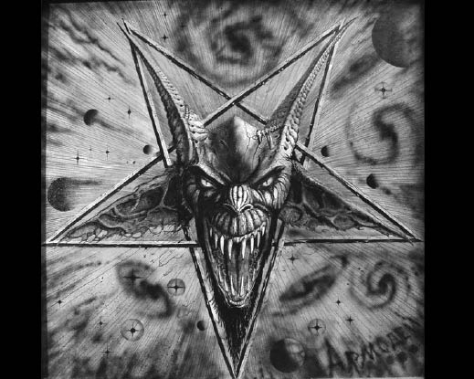
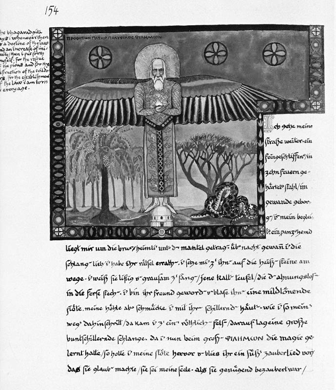

Warrax
Περι Δαίμονος πραγματεία
Гений спит в каждом, кроме гения.
Здесь он пашет…
А. Анисенко

Слово «δαίμων» — весьма многозначное. В классическом древнегреческо-русском словаре Дворецкого [1] можно прочесть следующее:
δαιμονάω — находиться во власти (мстящего) божества, быть одержимым, безумствовать, неистовствовать Eur., Xen., Plut., Luc.: ἄχη δαιμονῶν Arph. обезумевший от страданий; δαιμονῶντες ἐν ἄτᾳ Aesch. обреченные судьбой на преступление; δαιμονᾷ δόμος κακοῖς Aesch. дом поражен (свыше) бедствиями.
δαιμόνια adv. — чрезвычайно, страшно (βούλεσθαι ποιεῖν τι Arph.).
δαιμονίζομαι — 1) обожествляться Soph.; 2) Plut., NT = δαιμονάω .
δαιμονικός 3 — 1) сверхъестественный или божественный (δύναμις Plut.); 2) исходящий от злого божества (οὐ θεῖος, ἀλλὰ δ. Plut.); 3) одержимый нечистой силой (ὄνος καθαρός, ἀλλὰ δ᾽ Plut.).
δαιμόνιον τό — 1) божество (преимущ. низшего порядка): демон, гений, дух (πᾶν τὸ δ. μεταζύ ἐστι θεοῦ τε καὶ θνητοῦ Plat.; τὸ δ. θεὸς ἢ θεοῦ ἔργον Arst.; μή τι δ. τὰ πράγματα ἐλαύνῃ Dem.): τὸ δ. ἑαυτῷ σημαίνειν Xen. (Сократ утверждал), что руководит им (некое) божество; 2) божественное начало, бог (τιμᾶν τὸ δ. ἀεί Isocr.); 3) злой дух, бес (δαιμονίοις θύειν καὶ οὐ θεῷ NT).
δαιμόνιος 3, редко 2 — 1) божественный, божеский, ниспосланный божеством (νύξ HH; τέρας Soph.; σοφία Plat.; θεῖόν τι καὶ δαιμόνιον ἡ φιλοσοφία Arst.; φάσμα Plut.): τὰ δαιμόνια Thuc., Xen. и τὰ δαιμόνια πράγματα Plat. божеские определения, дела или знамения; 2) роковой, ужасный (ἄχη Aesch.; τύχη Plat.; ἀνάγκη Lys.); 3) необыкновенный, удивительный, замечательный (δ. καὶ θαυμαστός Plat.): δ. τὴν σοφίαν Luc. человек необыкновенной мудрости; εἰ μή τι δαιμόνιον εἴη Xen. если ничего из ряда вон выходящего не случалось; 4) (в обращении):ὦ δαιμόνιε (ἀνδρῶν, ἀνθρώπων) ! Her., Arph., Plat. милейший мой!, но тж. ах ты, чудак!, Hom. преимущ. безумец!
δαιμονι-ώδης 2 — бесовский (σοφία NT).
δαιμονίως — 1) божеским определением, по воле божества (οὐκ ἀνθρωπίνως, ἀλλὰ δ. Aeschin.); 2) необыкновенно, поразительно, чрезвычайно (ἐπιθυμεῖν ποιεῖν τι Arph.; δ. φιλότιμος Plut.): δαιμονιώτατα ἀποθνήσκειν Xen. умереть крайне загадочной смертью.
δαιμονο-βλάβεια ἡ — ниспосланное богами безумие Polyb.
δαίμων, ονος ὁ и ἡ — 1) бог, богиня (δώματ᾽ ἐς Διὸς μετὰ δαίμονας ἄλλους Hom.): δαίμονι ἶσος Hom. богоравный; σὺν δαίμονι Hom. с божьей помощью; πρὸς δαίμονα Hom. против божьей воли; 2) божество (преимущ. низшего порядка): дух, гений, демон (δαίμονες ἐπιχθόνιοι, φύλακες θνητῶν ἀνθρώπων Hes.; θεοὶ καὶ οἱ ἑπόμενοι θεοῖς δαίμονες Plat.; ἐκ μὲν ἡρώων εἰς δαίμονας, ἐκ δὲ δαιμόνων εἰς θεοὺς ἀναφέρεσθαι Plut.); 3) (тж. δαίμονος τύχη Pind., τύχη δαιμόνων Eur., δ. καὶ τύχη Aeschin., Dem. и τύχη καὶ δαίμονες Plat.) божеское определение, роковая случайность: κατὰ δαίμονα Her. по воле случая; ἀπ᾽ ὠμοῦ δαίμονος Soph. по воле жестокой судьбы; δαίμονος αἶσα κακή Hom. злой рок; 4) злой рок, несчастье: δαίμονα δοῦναί τινι Hom. погубить кого-л.; πλὴν τοῦ δαίμονος Soph. несмотря на это несчастье; 5) душа умершего (Δαρεῖος Aesch.; νῦν δ᾽ ἐστὶ μάκαιρα δ. Eur.). .
Как видите — трактовок множество, причём весьма различных. Не углубляясь в лингвистические проблемы (у меня нет соотв. квалификации, и интересует нас сейчас совсем другое), посмотрим на оттенки смысла и их изменение.
Находиться во власти божества, безумствовать и т.д. — значение, имеющее для современного человека явно негативный коннотат, во времена Древней Греции имело нейтральный смысл. Тогда люди не отделяли себя и мир от богов, они воспринимались как Силы природы в персонифицированном виде (здесь я значительно упрощаю[1], но иначе придётся писать ещё одну немаленькую статью на тему «мировосприятие древних»). Понимание «безумства» в данном контексте сходно с трактовкой в оккульте — восприятие не через ограниченное человеское ego, не только через ratio рассудка. Символ анакефала (но не забывайте, что безголовый должен держать голову в руках [2]). Божества тогда ещё не воспринимались как что-то сугубо внешнее; таким образом, речь в переводе на современный язык идёт о единении с божеством, адекватной оккультно-языческой практике.
Разумеется, подобный контакт для неподготовленного человека мог закончиться весьма плачевно, что породило «негативные» трактовки в плане последствий, а также «чрезвычайно, страшно» и т.п. — обычная нуминозность восприятия. Между «роковой, ужасный» и «необыкновенный, удивительный, замечательный» НЕТ противоречия: именно так воспринимает богов обычный человек, который всё же смог до них «достучаться». Психика вовсе не обязательно следует формальной логике: «люблю и ненавижу тебя» — не такой уж редкий случай. Другой вопрос, что в обоих случаях речь идёт об общечеловеческом уровне развития; для гармонично проработанной психики будет верно либо «люблю», либо «ненавижу» (или нечто третье), но когнитивного диссонанса не будет — нуминозность восприятия уйдёт, и максимум, что останется — это эустресс.
В дальнейшем под влиянием христианства значение термина от нейтрального «взаимодействие с богами» изменилось на отрицательное — «бесовский» и проч.
В древнегреческо-английском словаре Лиддела и Скотта [3] трактовок ещё больше. Принципиально они не отличаются, но нет смещения в сторону «низшего порядка» божеств — видимо, это наносное христианское, и большее внимание уделено трактовке в виде «судьбы». Последнее связано со спецификой мировосприятия западной культуры — там традиционно высока роль fatum’а и прочего предопределения, чего в принципе нет в русской культуре.
В словаре Лампе [4] статья «Δαίμων» занимает четыре страницы убористого текста, но там уклон в патристику, поэтому понятно, что получаем «на выходе». Впрочем, интересно, что одно из значений, употребляемых христианами, было и «еретик».
Смотрим «Мифы народов мира» [5]:
«ДЕМОН (Δαίμων), в греческой мифологии обобщённое представление о некоей неопределённой и неоформленной божественной силе, злой или (реже) благодетельной, часто определяющей жизненную судьбу человека. Это мгновенно возникающая и мгновенно уходящая страшная роковая сила, которую нельзя назвать по имени, с которой нельзя вступить ни в какое общение. Внезапно нахлынув, он молниеносно производит какое-либо действие и тут же бесследно исчезает. В этом образе очевидны рудименты т. н. внезапного преанимизма (по терминологии Г. Узенера, Д. — не что иное, как “бог данного мгновения”). Иногда олимпийские боги тоже называются Д., но только в обобщённо-неопределённом смысле или в случае, когда бог не проявил себя индивидуально и скрывает своё имя. Д. непосредственно воздействует на человека, готовит беду (Hom. Od. XII 295), прельщает (XVI 194), насылает беды (XIX 512), зловещие сны (XX 87). Д. направляет человека на путь, ведущий к каким-либо событиям, часто катастрофическим (Hom. Od. VI 172; VII 248; П. XXI 92). Д. вызывает неожиданно ту или иную мысль (Hom. Il. IX 600; Od. Ill 27). Иной раз Д. действует благодетельно (Od. IX 381), встречается эпитет ολβιοδαίμων, “счастливодемонический”. Д. приравнивается к судьбе, все события человеческой жизни находятся под его влиянием (Aeschyl. Pers. 825; Soph. frg. 592; Eur. Andr. 971). Есть Д. рождения (Pind. 01. XIII 105), Д. добра и зла (Pind. Pyth. Ill 34), характер человека — его Д. (Heraclit. frg. 119), каждому человеку в жизни достаётся свой Д. (Plat. Phaed. 107 d). Демоны мыслятся также низшими божествами, посредниками между богами и людьми. У Гесиода поколение “золотого века” после своего исчезновения превратилось в “благостных Д.”, которые охраняют людей и взирают на правые и неправые дела (Hes. Орр. 121-126). В римской мифологии Д. соответствует гений. Раннехристианские представления о Д. связаны с образом злой демонической, бесовской силы (см. Бесы).
Лит.: Лосев А. Ф., Античная мифология в ее историческом развитии, М., 1967, с. 46-60; Ноrst Р. С. van, Δάίμων, «Mnemosyne», ser. 3, 10, 1940, с. 61-68; Nоwak Н., Zur Entwicklungsgeschichte des Begriffes Daimon, Bonn, 1960.
В описаниях мифологий различных народов Д. — условное обозначение тех сверхъестественных персонажей, которые не являются богами и занимают по сравнению с богами низшее место в иерархии (или находятся на низших уровнях в данной мифологической системе). В более узком и точном смысле Д. — злые духи. Согласно классификации, предложенной Г. Узенером и поддержанной Э. Кассирером, следует различать Д. (духа) как обозначение случайного мифологического образа, создаваемого из любого предмета, попадающего в поле действия мифологической мысли, и гения как обозначение мифологического символа судьбы и личности человека.
Лит.: Usener G., Gotternamen. Vereuch einer Lehre von der religiosen Begriffsbildung, Bonn, 1896; Сassirеr Е., Philosophie der symbolischen Formen, Bd 2 — Das Mythische Denken, В., 1925».
Вот и стало понятно, откуда взялись «низшие боги» и «злые духи» — действительно, позднее напластование, переход от δαίμων’а к «демону». Также важно упоминание: о богах говорят как δαίμων'ах, когда они не персонифицированы «индивидуально по имени». То есть — когда боги есть Силы, без антропоморфного искажения.
«Реальный словарь классических древностей» [6] немного проясняет ситуацию:
«ДЕМОН, Daemon, Δαίμων. У Гомера бог называется θεός или δαίμων, с тем только различием, что θεός означает бога самого по себе, в блаженном спокойствии и отдалении от мира человеческого, а δαίμων — бога в его отношении к людям, насколько он влияет благотворно или пагубно на их судьбу, оказывая благодеяние и помощь или наводя страх. Позднее возник особенный класс божественных существ, которых стали называть демонами. Так. напр., Гесиод (opp. et dd. 122) говорит, что люди золотого века, по окончании своей земной жизни, сделались демонами, добрыми сверхъестественными существами, хранителями людей, и что они, носясь невидимо повсюду на земле, наблюдают за правдой и неправдой и даруют богатство. Однако это место из Гесиода признают за позднейшую вставку, потому что вера в демонов не доходит до столь древних времен. Учение о них лишь у философов получило полное развитие.
С того времени как стали и героям воздавать божеские почести, демонам дали место в середине между богами и героями, и по мере того как боги все более и более стали удаляться от смешения с миром, демоны наполняли образовавшуюся между богами и людьми пропасть в качестве посредников, близких людям, способных чувствовать и страдать подобно им и деятельно влияющих на их судьбы.
По учению Платона (symp. 202. E.), они, подобно христианским ангелам, приносят на землю веления и дары богов и возносят к богам просьбы и молитвы людей. Из числа философов особенно неоплатоники I в. развили учение о демонах; эти представления перешли и в народные верования и там нашли почву для дальнейшего развития в культе героев и в чествовании умерших. Демоны, невидимо окружающие людей и приносящие счастие и несчастие, разделялись по различию своих свойств на добрых и злых, на духов-хранителей и духов-мучителей (ἀλάστορες), под влиянием которых, как полагали, стоят и отдельные лица и целые роды, города и страны. На основании учения Сократа и Платона образовалось поверье, что у каждого человека есть минуты рождения и руководящий им в нравственном отношении, т.к. демонов разделяли на добрых и злых, то со временем каждому человеку стали приписывать двух демонов, доброго и злого. У римлян du indigetes, как, напр., Ромул, Эней и Латин, равно как и genii были подобными существами. Иудеи и христиане впоследствии объявили всех языческих богов демонами, и притом злыми демонами, бесами».
Важно: изначальное понимание единения с богами впоследствии было разделено (разумеется, я здесь упрощаю картину) на далёких трансцендентальных богов и «близкие людям» сущности, в дальнейшем все деградировало до трансцендентального бога монотеизма и «демонов», которые не от Единого — и поэтому «плохие и вредные» a priori. В таком мировосприятии уже не вызывает удивления ни деление на добро/зло с соотв. демонами, ни прикрепление «персональных» сущностей каждому человеку.
У римлян был термин «гений» (genius). «Постепенно Г., рассматривавшийся как персонификация внутренних свойств, стал самостоятельным божеством, рождавшимся вместе с человеком (иногда предполагалось два Г. — добрый и злой), руководившим его действиями, а после смерти человека бродившим близ земли или соединявшимся с другими богами. В таком качестве Г. соответствует греческому демону (напр., у Апулея в сочинении «О боге Сократа») и занимает значительное место в позднейшей демонологии. Считалось, что Г. имели не только люди, но и города, отдельные местности [согласно Сервию (Serv. Verg. Aen. V 85), не было места без Г.], корпорации, воинские части и т.д.» [5].
Вариации на тему «ангелов-хранителей» и «демонов-вредителей» малоинтересны, как и околохристианская «демонология» и прочая «гоэтия». Понятие исказилось уже настолько, что потеряло изначальный смысл. Давайте вспомним δαίμων’а Сократа. Читаем у Кессиди [7]:
«Что такое “демон”, “демоний” или “даймон” Сократа, какова сущность его “даймониона”, было неясно уже ученикам и друзьям философа, не говоря о более поздних античных авторах — Цицероне, Плутархе, Апулее, высказывавшихся на этот счет. О демонии Сократа говорили христианские писатели, причем для одних (Тертуллиан, Лактанций), враждебно настроенных к “языческому” миру, сократовский демоний был существом сатаническим, а для других (Климент Александрийский, св. Августин), придерживавшихся в отношении античности умеренной и примирительной позиции, — своего рода ангелом-хранителем. Здесь нет необходимости останавливаться на множестве догадок и соображений относительно демония Сократа, высказанных в последующие века. Укажем лишь на современные толкования. Одни исследователи (А. Ф. Лосев) видят в демоне Сократа метафору, которой он иронически прикрывал свои собственные совесть, разум или здравый смысл (Лосев. 1970. С. 50); другие (Т. Гомперц, С. А. Жебелев) — просветленное чувство, просветлённое внутреннее чутье или инстинкт (Гомперц. С. 65; Жебелев. С. 109); третьи (С. Н. Трубецкой, Дж. Г. Льюис) — выражение внутреннего (провиденциального) откровения (Трубецкой. С. 500) или проявление религиозного энтузиазма (Льюис. С. 164); четвёртые (Ф. Ницше) — “чудовищный” феномен, при котором инстинкт и сознание (их функции) заменяют друг друга (Ницше. С. 102); пятые (Ж. Брен) — свидетельство того, что внутреннему миру каждого присуща трансцендентность (Вrип. Р. 96).
О демоне Сократа писал также молодой Маркс. Склоняясь к рационалистическому пониманию даймония Сократа и высказывая мысль о тенденции философа освободиться от всего мистического и загадочно-демонического (божественного), Маркс писал, что Сократ, сознавая себя носителем даймония, не замыкался в себе: “...он — носитель не божественного, а человеческого образа; Сократ оказывается не таинственным, а ясным и светлым, не пророком, а общительным человеком” (Маркс, Энгельс. Т. 40. С. 57). Действительно, Сократ не был ни вдохновенным провидцем, ни исступленным пророком, ни гением озарения. Но в личности Сократа было нечто такое, что сближало его, по представлениям современников, с провидцем и пророком или, во всяком случае, позволяло (и позволяет) говорить о нем как об уникальной фигуре.
Феноменальность Сократа состояла в крайне редко наблюдаемом соединении горячего сердца и холодного ума (Гомперц. С. 32), обостренного чувства и трезвого мышления, фанатизма и терпимости — фанатической преданности идее, доходящей до полного подчинения ей своей жизни, и способности понимать чужие взгляды и воззрения. Сократ — это воплощение аналитического ума в соединении с пророческой вдохновенностью; это — сплав критического мышления, свободного исследования с горячим энтузиазмом, граничащим с мистическим экстазом. Поэтому нет ничего удивительного в том, что ученики Сократа расходились в характеристике его личности и его “даймониона”.
По словам Ксенофонта, “божественный голос” (даймонион) давал Сократу указания относительно того, что ему следует делать и чего не следует (Воспоминания. I. 1. 2; Защита Сократа на суде. 12). Основываясь на этом “голосе”, Сократ будто бы давал советы друзьям, которые всегда оправдывались (Воспоминания. I. 1. 4). Таким образом, по Ксенофонту, Сократ предвидел будущее и признавал за собой дар пророчества. По-иному сообщает о даймонионе Сократа Платон. У последнего ничего не говорится ни о предсказаниях, ни о велениях божества, обращенных к Сократу, ни о каких-либо советах друзьям. У Платона сократовский даймонион — явление более сложное и редкое. “Началось у меня это с детства, — заявляет Сократ в “Апологии” (31 d) Платона, — возникает какой-то голос, который всякий раз отклоняет меня от того, что я бываю намерен делать, а склонять к чему-нибудь никогда не склоняет. Вот этот-то голос и возбраняет мне заниматься государственными делами”.
Сделаем некоторые предварительные выводы: у Ксенофонта сократовский даймонион и отвращает от чего-либо, и побуждает (склоняет) к чему-либо. У Платона даймонион только отвращает (отговаривает), но никогда не склоняет. Сообщение Ксенофонта дает некоторое основание для трактовки даймониона Сократа как голоса совести и разума, или здравого смысла. Сообщение же Платона, напротив, на первый взгляд, во всяком случае, не дает каких-либо явных поводов для подобной трактовки. Надо полагать, что сократовский даймонион (называемый также “божественным знамением”) у Платона (Апология. 40 а–с) означает некое обострённое предчувствие, некое “шестое чувство”, или сильно развитый инстинкт, который каждый раз отвращает Сократа от всего того, что было для него вредным и неприемлемым. Оказывается, что и бездействие “привычного знамения” многозначительно: если “божественное знамение” не останавливает Сократа и не запрещает что-либо говорить и делать, тем самым оно молчаливо склоняет его к этому либо же предоставляет полную свободу действия.
Отсюда можно сделать вывод, что между ксенофонтовской и платоновской характеристиками даймониона Сократа нет столь существенного различия, как принято считать. Это и позволяет трактовать даймонион Сократа в рационалистическом духе, т. е. в качестве метафорического обозначения голоса собственной совести и разума или же аллегорического выражения собственного здравого смысла. Тем не менее подобная интерпретация верна лишь отчасти.
Дело в том, что даймонион Сократа основан на иррациональной вере в божество, на допущении тесной связи внутреннего “голоса” с вне и независимо существующим божеством. Поэтому сократовский даймонион — нечто большее, чем обычный голос совести. Это обстоятельство придает ему новую черту, новое измерение и заставляет предполагать, что даймонион — это своего рода полумифологическое олицетворение и полуметафорическое выражение всеобщего (истинного и объективного), содержащегося во внутреннем мире человека, в его разуме и душе. “Ведь и душа есть нечто вещее”, — говорит Сократ в “Федре” (242 с). Поэтому Сократ не только осознает присутствие в себе даймониона, но и живо его представляет, чувствует и переживает как некую высшую реальность, как божественное знамение. Отсюда вытекает вывод относительно феномена Сократа, его даймония: хотя Сократ не может выразить всеобщее в слове, в рациональном определении, тем не менее он (как и его собеседник Лахес) чувствует, что искомое общее понятие (например, мужество) у него имеется. То, что Сократу не удается выразить в словах и понятийных определениях, он улавливает как “божественный голос”, звучащий в нем самом, исходящий из глубин его души, его разума и совести. “Божественное” в душе и есть, согласно Сократу, даймонион.
По мысли древнего философа, “божественное” в человеке отвлекает от всего субъективного, произвольного и ложного, от всего эгоцентрического, преходящего и пошлого. Оно направляет на путь поиска всеобщего морального закона, сознательное и непринужденное подчинение которому является гарантией укрепления уз, связывающих человека с другими в личной и общественной жизни.
Согласно духу учения Сократа, выбор образа действия, соотносящегося с требованиями всеобщего нравственного закона, делает людей творцами своей судьбы. Однако афинский философ, оставаясь религиозным человеком, старался, по словам Ксенофонта (Воспоминания. I. 1. 9), “узнать волю богов посредством гаданий”. Вместе с тем Ксенофонт (Там же. I. 1. 6–9) сообщает, что Сократ считал необходимым обращаться к гаданиям и вопрошать прорицателей (оракулов) лишь в тех случаях, когда исход предпринимаемого дела оставался неизвестным».
К сожалению, Сократ непосредственно не оставил текстов на тему «что я конкретно понимаю под δαίμων'ом». Впрочем, не думаю, что там было бы именно конкретное описание: при всей гениальности философа в то время психология была неизвестна в принципе, а в оккульте до сих считают, что чёткие формулировки — не барское дело.
Что можно сказать на тему δαίμων'а в сократовском смысле? «Внутренний голос» — это, понятно, образное описание, исторических свидетельств о регулярных слуховых галлюцинациях у Сократа не осталось.
Важно: несмотря на то, что термин δαίμων относится к богам вообще, Сократ говорил именно о внутреннем восприятии. Всё сходится, если трактовать δαίμων'а именно как проявление божественных Сил в человеке: понимание «приходит» не от конкретного бога, а «вообще».
***
Говоря о δαίμων’е, некорректно пропустить концепцию А. Кроули о «святом ангеле-хранителе». В «Магии в теории и на практике» [8] (стр. 74–75) читаем:
«Тому, кто впоследствии стал МАСТЕРОМ ТЕРИОНОМ, однажды пришлось столкнуться точно с таким же затруднением. Преисполненный решимостью выступить наставником для человечества, Он подыскивал простую словесную форму для выражения своей цели.
Воле Его хватило здравого смысла, чтобы сформулировать задачу так: он будет обучать человечество достижению следующей ступени — то есть приближению к сущности, расположенной в иерархии непосредственно над человеком. Можно было бы назвать эту сущность богом, или «Высшним “я”», «авгоэйдом»[2], или «ади-буддой»[3], или иным из шестидесяти одного прочих имен… Однако Он обнаружил, что все эти имена суть одно — и что в то же время каждое из них подразумевает одну из возможных теорий устройства Вселенной, теорию, которая в конечном счете рассыплется на части, не выдержав критики (ибо Он уже прошел Царство Рассудка из конца в конец и знал, что всякое утверждение внутренне противоречиво[4]). Поэтому Он сказал: “Обнародую-ка я этот Труд вот под каким названием: “Достижения, Знания и Собеседования со Священным Ангелом-Хранителем””, — ибо теория, на которую намекают эти слова, заведомо абсурдна до такой степени, что только простофили станут тратить время на ее исследование. Она будет принята за простую условность, и никто всерьез не подвергнется опасности выстроить на ее основе философскую систему».
Следует заметить, что систему-то по указанной причине (эклекстичности понимания сонцепции САХ самим Кроули) не построили, а вот заморочек на собеседовании с САХ у телемитов предостаточно. Скажем, очень часто в переводах встречается не «священный» ангел (относительно нейтральный термин), а «святой», что отчётливо отдает христианством. Впрочем, у Кроули тоже «Holy Guardian Angel», а не «sacred» или, скажем, хотя бы «celestial».
Ещё показательнее то, что имён, мол, много, но выбран именно «Holy Angel» и при этом «Guardian». Какое-нибудь «истинное Я» подошло бы больше (хотя тоже криво), а если хочется зачем-то персонификации — то ади-будда был даже упомянут. ЗАЧЕМ именно САХ?! Варианта кроме «бессознательная связь с христианством» я здесь не вижу: и «ангел», а не тот же ??????, и «хранитель» (т.е. упор не на самостоятельное развитие, а «охрану» и прочую сотериологию — мол, спаси и сохрани). И как не рационализируй потом, что-де на самом деле имеется в виду то-то и то-то, а название — просто так, по приколу, — всё равно видна «оговорка по Фрейду»: термин-то выбран именно этот!
Писать трактат «специфика концепции САХ у Кроули в частности и у телемитов в общем» не вижу смысла: кривизну концепции я уже показал, но логично всё же глянуть чуть подробнее, чтобы не было обвинений «просто к словам придрался».
Для этого воспользуемся книгой Дж. Э. Корнелиуса «Магическая сущность Кроули» [9], благо он затрагивает и вопрос δαίμων'а как такового.
Корнелиус отмечает, что сейчас предствления о САХ у многих странные — «появилось множество книг, изобилующих эдакими белоснежными квазихристианскими гиперболами», а сам Кроули «начинает шлёпать губами, словно выброшенная на берег рыба», как только речь заходит о конкретике на тему САХ. Путаница даже в том, является ли сущность внешней или внутренней: с одной стороны, «Кроули называет Священного Ангела-Хранителя Авгоэйдом или же личным Гением человека, наподобие того, с которым общался Сократ», с другой стороны — «как быть с высказыванием из его “Исповеди”, где утверждается, что “невероятное преимущество этого конкретного разума… над любыми другими, с которыми человечество когда-либо вступало в осознанное общение”?». К тому же, отмечает Корнелиус, Кроули отождествляет САХ «со всем подряд, начиная от Святого Духа, Логоса (Слова), Христа, Атмана и Адонаи и заканчивая “Маленьким человечком”, фигурирующим в индийском мистицизме».
Итак: концепция САХ не определена корректно самим Кроули (такое надо умудриться намешать в кучу[5]), при этом отчётливо «попахивает» бессознательными завязкой на христианство.
Ещё иллюстрация из «Магии без слёз» [10], глава 42 «Направленность внутрь себя»:
«Можно просто принять, что Augoeides, гений Сократа, и Священный Ангел-Хранитель мага Абрамелина тождественны. Но мы не можем использовать это “высшее я”, поскольку ангел – это реально существующая личность со своей вселенной, как и человек, а “высшее я” — это абстракция. Кажется, что оно просто обозначает некую выборку качеств, ангел же — не просто понятие».
Глава 43: «Священный Ангел-Хранитель — не “высшее я”, но реальная сущность»
«Священный Ангел-Хранитель также является существом такого рода. Он представляет из себя нечто большее, чем просто человека, возможно потому, что уже прошел через эту стадию, его отношения напоминают дружбу, близость, братские или даже отеческие чувства. Позволь мне подчеркнуть, что он не является простой абстракцией тебя самой; именно поэтому я настаиваю, что термин “высшее я” является “ужасной ересью и опасным заблуждением”.
Если бы это не было так, в “Священной Магии Абрамелина” не было бы смысла».
Как видите, всё очень печально: заявляется существование ангелов как реальных существ. При этом Кроули как-то называл себя атеистом[6].
И надо же, какая трагедия — в некоей старой книженции [11] не было бы смысла! А с чего бы утверждать, что он там всенепременно есть? И тем более — что полезный. Скажем, в этом гримуаре предписывается именно что молиться [монотеистическому] богу, причем без искренности и проч. типа ничего не выйдет[7].
Представляют интерес рассуждения Корнелиоса о δαίμων'е. Следует сразу отметить, что автор, по-видимому, не является христианином непосредственно, но оцените при этом рассуждения ветерана O.T.O.: «Но если эта атеистическая точка зрения верна, если Бог и вправду умер, то в чём тогда смысл нашего путешествия от колыбели до могилы? … Какой смысл во всех этих усилиях, если наша жизнь и впрямь закончится беспробудным сном смерти? Не может быть, чтобы на этом всё и оборвалось! Иначе вся борьба между добром и злом в нашей жизни очевидным образом тщетна». Как видите — стандартное заблуждение на тему «добра и зла» и надежда на «жизнь после смерти», так что надо учитывать специфику восприятия.
Далее идут рассуждения о том, что во многих культурах есть концепции «духов-хранителей», в основном это разобрано выше даже более подробно. Представляет интерес тезис о замене термина δαίμων на αυγοειδης — т.е. от нейтральной естественной Силы к «помощнику от Света», что очень показательно. И в конце рассуждений Корнелиус честно признает, что концепция САХ — иудео-христиансткая.
При этом автор пишет о восприятии греками δαίμων'а вполне адекватно: «Изначально этим словом обозначались любые сущности, принадлежащие к «срединному миру» (μεταξυτη) и действующие как посредники между богами и человечеством». В качестве примера приводится отрывок из «Золотых стихов Пифагора»: «О Зевс-Отец, освободи же от всех страданий великих иль укажи каждому ты на даймона, что станет ему провожатым». Уже, как видите, не просто охранитель, но ещё и провожатый: даже не «помоги на Пути», а ещё и «укажи Цель, показывай дорогу». Впрочем, в оригинале речь не идёт о «провожатом» в этом смысле, так что претензия — к Корнелиусу. Фраза в оригинале выглядит так [12]:
«Ζεῦ πάτερ, ἦ πολλῶν γε κακῶν λύσειας ἅπαντας,
εἰ πᾶσιν δείξαις, οἵωι τωι δαίμονι χρῶνται».
Вариант перевода[8]:
«Зевс-отец! поистине многих от зла уберег бы ты,
если бы всем раскрыл общение с Даймоном»[9].
Затем указывается на диалог Платона «Пир» [13]:
«— Вот видишь, — сказала она, — ты тоже не считаешь Эрота богом.
— Так что же такое Эрот? — спросил я. — Смертный?
— Нет, никоим образом.
— А кто же?
— Как мы уже выяснили, нечто среднее между бессмертным и смертным.
— Кто же он, Диотима?
— Великий гений, Сократ. Ведь все гении представляют собой нечто среднее между богом и смертным.
— Каково же их назначение?
— Быть истолкователями и посредниками между людьми и богами, передавая богам молитвы и жертвы людей, а людям наказы богов и вознаграждения за жертвы. Пребывая посредине, они заполняют промежуток между теми и другими, так что Вселенная связана внутренней связью. Благодаря им возможны всякие прорицания, жреческое искусство и вообще все, что относится к жертвоприношениям, таинствам, заклинаниям, пророчеству и чародейству. Не соприкасаясь с людьми, боги общаются и беседуют с ними только черед посредство гениев — и наяву и во сне. И кто сведущ в подобных делах, тот человек божественный, а сведущий во всем прочем, будь то какое-либо искусство или ремесло, просто ремесленник. Гении эти многочисленны и разнообразны, и Эрот — один из них[10]».
Сам Корнелиус считает, что «высшее “Я” — это только средство связи между нами и нашим Священным Ангелом-Хранителем», который является средством связи с начальником всех ангелов — богом. Видите, как искусственно усложняется система?
Забавно, что в конце концов Корнелиус в одном аспекте приходит к правильному метафизическому выводу:
«…вопрос, которым нередко задаются маги… звучит примерно так: “Если вы уже научились воспринимать наставничество своего даймона, то почему нельзя просто довериться ему, чтобы он провёл вас через пустыню Бездны?”. На это Алистер Кроули даёт простой ответ:
Когда Свободный Адепт достигает Границы Бездны, Священный Ангел-Хранитель его покидает, и он остаётся один на один с величайшим ужасом предстоящего ему перехода.
— Liber LXXI
Иными словами, ваш Священный Ангел-Хранитель, или Даймон, не может войти в Бездну: если бы он это сделал, то Бездна поглотила бы его. Бездна — это особая сфера, куда не отважится войти ни один ангел. …на всём пути в Бездну вам придётся справляться самостоятельно… там, где вы стоите сейчас, Бога нет».
Именно так! Если индивид дошёл до Бездны — дальше нет никаких помощников на Пути, и надо принимать решение: либо, устрашившись, вернуться обратно[11], либо прыгнуть в Бездну — будучи достаточно уверенным в том, что взлетишь, что Чёрные крылья прорвутся из Тьмы наружу и дадут тебе свободу маневра во Тьме Бездны. Если не будет уверенности — не будет возможности полёта; будет вера — будет иллюзия полёта, и летун, испытывая щенячий восторг, не сможет управлять полётом — и убьёт себя о стену Бездны.
И никакого «Верую в единого ГОСПОДА, тайного и невыразимого»! (Гностический символ веры [14]), даже если пытаться увиливать: «Телема понимает бога исключительно в манифестанистском ключе» [15], всё равно «О мой Бог, едино твое дыхание, един твой исток».
Нет уж, Единое без Единого! [2] Впрочем, «вред концепции Единого бога любой разновидности» — тема для отдельной обширной работы[12].
***
Необходимо вспомнить и о величайшем психологе XX века — Карле Густаве Юнге.
Мария Луиза фон Франц, коллега Юнга, проработавшая вместе с ним три десятка лет, пишет [16]: «Направляющий центр, из которого исходит упомянутое регулирующее воздействие, похоже, представляет собой своего рода “ключевой атом” в нашей психической системе, ее ядро. Можно также сказать, что этот центр изобретает, упорядочивает и генерирует образы сновидений. Юнг назвал этот центр Самостью и охарактеризовал его как охватывающий всю психику человека, в отличие от эго, представляющего лишь небольшую часть психики.
На протяжении столетий люди интуитивно знали о существовании такого внутреннего центра. Греки называли его внутренним Даймоном; в Египте он выражался концепцией души — Ба, а римляне почитали его за “гения”, присущего каждому индивидууму. В первобытных общинах его часто считали духом-хранителем, воплощенным в животном или фетише».
Интересно высказывание самого Юнга [17]: «Вместо того чтобы постоянно заверять себя, будто даймон есть иллюзия, западному человеку надо вновь открыть реальность этой иллюзии. Ему надо бы научиться заново узнать эти психические силы, а не ждать, покуда его причуды, нервные срывы и бредовые идеи заявят ему, к его вящей муке, что он не единственный хозяин в доме. Расщепляющие тенденции суть действительные психические личности, обладающие относительной реальностью. Они реальны, когда не признаются реальными и потому проецируются; относительно реальны, когда соотносятся с сознанием (на языке религии: когда существует культ); и ирреальны, поскольку сознание начинает отвязываться от своих содержаний. Но последнее имеет место лишь в том случае, если человек проживает свою жизнь столь исчерпывающе полно и с такой отдачей, что для него больше нет никаких безусловных жизненных обязательств…»
У δαίμων 'а Юнга даже было имя [18]:
«…позже моё бессознательное явило мне другой образ, он стал развитием и продолжением Ильи-пророка. Я назвал его Филемоном. Будучи язычником, Филемон привнес в мои фантазии некое египетско-эллинское настроение с оттенком гностицизма. Образ этот впервые явился мне во сне.
Я видел небо, но оно походило на море. Его покрывали не облака, а бурые комья земли, между которыми просвечивала голубизна морской воды, но эта вода была небом. Вдруг откуда-то справа ко мне подлетело крылатое существо — старик с рогами быка. В руках у него была связка ключей, один из них он держал так, будто собирался открывать замок. …
Филемон и другие образы фантазий помогли мне осознать, что они, возникнув в моей психике, созданы тем не менее не мной, а появились сами по себе и живут своей собственной жизнью. Филемон представлял некую силу, не тождественную мне. Я вел с ним воображаемые беседы. Мой фантом говорил о вещах, которые мне никогда не пришли бы в голову. Я понимал, что это произносит он, а не я. Он объяснил, что мне не следует относиться к своим мыслям так, будто они порождены мной. “Мысли, — утверждал он, — живут своей жизнью, как звери в лесу, птицы в небе или люди в некой комнате. Увидев таких людей, ты же не заявляешь, что создал их или что отвечаешь за их поступки”. Именно Филемон научил меня относиться к своей психике объективно, как к некой реальности.

Рисунок Филемона авторства Юнга.
Беседы с Филемоном сделали для меня очевидным различие между мной и объектом моей мысли. А поскольку он являлся именно таким объектом и спорил со мной, я понял, что есть во мне нечто, объясняющее вещи, для меня неожиданные, которые я не готов принять.
Психологически я воспринимал Филемона как некий высший разум. Он казался мне фигурой таинственной, временами совершенно реальной. Я гулял с ним по саду, чувствуя, что он является для меня чем-то вроде того, что в Индии называют гуру.
…лучшее, что я мог себе пожелать, это иметь настоящего гуру, — чтобы кто-то был рядом со мной — кто-то, превосходящий меня знаниями и опытом, способный разобраться в путанице непроизвольных созданий моей фантазии. Эту задачу и взял на себя Филемон, которого я nolens-volens признал своим наставником. Он и в самом деле сумел облегчить мою жизнь.
Помню, как лет через пятнадцать меня посетил пожилой и очень интеллигентный индус, друг Ганди. Мы с ним беседовали о системе образования в Индии и, в частности, об отношениях между гуру и chelah (учениками). Я осторожно попросил гостя рассказать что-нибудь о личности и характере его собственного гуру. На это он мне совершенно серьезно ответил: “Это был Чанкарачара”. “Не хотите ли вы сказать, что имеете в виду комментатора Вед? Но ведь он давно умер”, — поразился я. “Да, речь именно о нем”, — подтвердил индус. “Следовательно, это был дух?” — спросил я. “Разумеется”, — сказал он. В этот момент мне вспомнился Филемон. “Такие гуру-призраки существуют, — добавил мой гость. — У большинства людей живые гуру, но всегда были люди, у которых наставниками были духи”.
Меня это несколько успокоило. Значит, я не совсем утратил связь с миром, что меня постоянно мучило. Выходит, я переживал то же, что и другие, в моих проблемах не было ничего исключительного.
Затем на смену Филемону пришел другой образ, я назвал его Ка. В древнем Египте “царь Ка” был существом, относящимся к стихии земли, ее духом; в моей фантазии дух Ка явился из земли — из глубокой расщелины. Я нарисовал его, попытавшись передать эту его связь с землей; у меня получилось изображение, чем-то напоминающее бюст, с каменным основанием и верхней частью. Верх рисунка венчало крыло зимородка, а между ним и головой Ка находилось нечто вроде искрящейся дымки. В выражении лица Ка угадывалось что-то демоническое, я бы сказал — мефистофельское. …
Филемон был хромым, но крылатым духом, другой же — Ка — олицетворял собой стихии земли или металла. Филемон являлся духовным, осмысленным началом, Ка — духом природы, как Антропарион в греческой алхимии, о которой в то время я ничего не знал. Ка воплощал нечто реальное, но одновременно он был тем, кто скрывает смысл (дух птицы) или подменяет его красотой (вечным отражением).
Со временем эти образы слились у меня в один — я стал изучать алхимию».
Обратите внимание: Юнг воспринимал ??????'а как «внешнего гуру», но при этом не терял осознания, что это — именно его восприятие, а не индивидуальная сущность — наглядно иллюстрируется слиянием образов, что легко объясняется на архетипическом уровне, но никак не состыкуется с онтологически личностной моделью.
Также о Филемоне можно прочесть в «Красной книге» Юнга (см. иллюстрацию выше), не буду злоупотреблять цитатами.
***
Я не устраивал опрос, но, пожалуй, любой оккультист сталкивался с ??????’ом, неким «внутренним чувством», которое может «сказать», что нечто надо сделать всенепременно и прямо сейчас, а нечто — вообще делать не стоит. Именно контакт с бессознательным, причём не только личным, но и коллективным; при этом явление становится обычным, а не спорадическим, при достаточном уровне развития личности и вовлечённости в тему.
Понятно, почему акцент стоит на «не надо», а не на «делай то-то»: у сформировавшейся личности очень чётко идет опознавание «моё/не моё» — можно сказать, на инстинктивном уровне. Поэтому отторжение возникает сразу. Чувство «надо именно то-то» возникает реже, т.к. Путь подразумевает множество вариантов, и строго однозначное «надо это» бывает редко (и при этом часто очевидно и на ментальном уровне).
Не менее важно понимать, что вера в независимо существующее личностное божество тут не при чём: это преломление через соотв. культурный код. Суть — во взаимодействии психики на глубинном уровне соответствия действительности, в не-отделении себя от Сил. А воспринимать это личностно или безличностно — кому как удобнее, зависит от конкретных особенностей психики (и от соотв. культуры тоже).
Формула «сатанист — это демон в теле человека» достаточно распространена, но часто её понимают неправильно, как «некий обособленный демон в человеческом теле». Отсюда — клин во всеразличные манихейско-гностические тупики вида «дух — хорошо, материя — плохо», «ах, я в чуждом мире и хочу спасения от него» и проч. Еще в CONTRA DEI #2 писалось [19]:
«Чем занимается «демон» в сатанисте, понятно. А чем занимается «человек» сатаниста? Да, человек должен умереть, и разговор идёт не о физическом, так как тогда сатанист тоже не выживет; смерть здесь рассматривается как перерождение — см. Аркан «Смерть». Но если мы ведём разговор о сатанисте, то не может быть борьбы «демон против человека» в психике — она, повторюсь очередной раз, холистична. Подобное ещё возможно (но не обязательно) на стадии nigredo, на которой элиминируется чел-овеческое. Личность же не может обладать двойственностью мотиваций и т. п. Таким образом, «внутренний человек» сатаниста осознанно желает умереть — т.е. переродиться в не-человека, в демона.
Отсюда возникает вопрос — а может ли этот «человек в сатанисте» быть каким-нибудь чмошником, обывателем и т.п.? Понятно, что нет — из говна мечи не куют. Образно говоря, этот внутренний человек обладает этикой самурая: он стремится умереть, но при этом — умереть достойно. А пока смерти ещё нет — он будет стремиться саморазвиваться так же, как и «демон». Было бы странно, если бы к развитию стремилась бы лишь часть личности.
Соответственно, имеем ещё один парадокс для поверхностного взгляда на ситуацию: для становления сатаниста как личности необходимо развитие его и как человека. Вопрос о приоритете — не стоит, иначе это будет не сатанист; но личность должна обладать гармоничной психикой. Попытка же отрицать часть себя приведёт лишь к вытеснению проблемы в бессознательное, с дальнейшим включением психической защиты».
«Невозможно уничтожить человека, кроме как через развитие, приведя его к полному исчерпанию человеческой природы и её преодолению. Простое вытеснение / подавление человеческого не даст желаемого эффекта. Демон берёт только самое лучшее, он не станет поглощать второсортного человека, даже если бы тот желал „метафизически умереть“». — Zardoz
На самом же деле в описании «сатанист — это демон в теле человека» акцент не на «одержимости», а на соответствии своему настоящему «Я», Тьме-в-себе. Δαίμων здесь — это часть ψυχη, микрокосм[13] в индивиде, осуществляющий взаимодействие с макрокосмом. Суть своего «Я», самость (если по Юнгу) и т.д. Также δαίμων — это «точка опоры» трансцендентальной функции [20], именно поэтому он «работает» тогда, когда Личность сформирована в достаточной степени. Совсем научно-психологически: δαίμων — структура ψυχη, отвечающая за адекватность интуиции.
Название альманаха «Δαίμων» означает, что его целью является публикация материалов, направленных на развитие δαίμων’а читателей, выработку умения отличать полезное не-научное от антинаучного бреда, оккультизм от религии et cetera. И, разумеется, — на лучшее понимание собственного «Я».
Специально для альманаха «Δαίμων» №1
Рисунок © А. Моро «Бафомет Армодэя»
Sapienti sat.
Satanas vobiscum!
06/2012
Список литературы
1. Древнегреческо-русский словарь: в 2 тт. под ред. чл.-корр. АН СССР проф. С.И. Соболевского — М.: Гос. изд. иностр. и нац. словарей, 1958. — 1044+1906 c.
2. Warrax. Ad usum internum Liber IV: Cogito // [Black Fire Pandemonium] URL: http://warrax.net/95/08/aui4.pdf (дата обращения: 28/06/2012).
3. A Greek-English Lexicon под ред. Scott R. Liddell H.G. — Oxford: Clarendon Press, 1996. — С. 365-366.
4. A Patristic Greek Lexicon под ред. G.W. Lampe — Oxford: Clarendon Press, 1961. — С. 328-331.
5. Мифы народов мира: в 2 тт., Том 1 — М.: Сов. Энциклопедия, 1991. — 671 с.
6. Любкер Ф. Реальный словарь классических древностей — М.: ДиректМедиа Паблишинг, 2007 (CD-ROM).
7. Кессиди Ф.Х. Сократ — СПб.: Алетейя, 2001. — 352 c.
8. Кроули А. Магия в теории и на практике — М.: Ганга, 2009. — 678 c.
9. Корнелиус Дж. Э. Магическая сущность Алистера Кроули — М.: Гарпократ, 2012. — 256 c.
10. Кроули А. Магия без слёз // [Электронный ресурс]: файл Adobe Acrobat.
11. "Livre de la Sacree Magie que Dieu donna a Moyse, Aaron, David, Salomon et a d'autres Saints Patriarches et Prophetes qui enseigne la vraye sapience Divine Iaissee par Abraham a Lamech son Fils tradtraduite de l'hebreu — s.l.: s.n., 1458 (Священная магия, которую бог дал Моисею, Аарону, Давиду, Соломону и другим святым, патриархам и пророкам, учившим истинной божественной мудрости, завещана Авраамом Ламеху, его сыну. Перевод с еврейского).
12. Pythagoras. Carmen aureum // Theognis, Ps.-Pythagoras, Ps-Phocylides, Chares, Anonymi aulodia, Fragmentum teliambicum. / под ред. D. Young — Lipsiae: B.G. Teubneri, 1971. — c. 93 (строки 61-62).
13. Платон. Пир // Платон. Собрание сочинений: в 4 тт., Том 2 — М.: Мысль, 1993. — c. 112-113.
14. Гностическая Католическая церковь // [Российский Орден Восточных Тамплиеров] URL: http://oto.ru/cgi-bin/article.pl?articles/church/history/egc.txt (дата обращения: 29/06/2012).
15. Телемский О. Символ веры – попытка комментария // [Российский Орден Восточных Тамплиеров] URL: http://oto.ru/cgi-bin/article.pl?articles/church/rituals/Credo.txt (дата обращения: 29/06/2012).
16. фон Франц М.Л. Процесс индивидуации // Юнг К.Г. Человек и его символы — s.l.: Серебряные нити, 2006 (http://jungland.ru/node/1907).
17. Юнг К.Г. Комментарий к "Тайне золотого цветка" // [Юнгианство и аналитическая психология Карла Густава Юнга] URL: http://jungland.ru/node/621 (дата обращения: 29/06/2012).
18. Юнг К.Г. Воспоминания, сновидения, размышления — Мн.: ООО "Харвест", 2003 (http://jungland.ru/Library/MemDream.htm).
19. Сатанист и общество (Warrax, рассуждение шестое)[14] // CONTRA DEI. — №2. — XLI A.S.. — c. 172.
20. Юнг К.Г. Трансцендентальная функция // Юнг К.Г. Избранное — Мн.: ООО "Попурри", 1998. — c. 19-52.
21. Warrax. Ad usum internum Liber II: Zero non adaequat duo // [Black Fire Pandemonium] URL: http://warrax.net/95/06/adi-2.pdf (дата обращения: 28/06/2012).
22. Мифы народов мира: в 2 тт., Том 2 — М.: Сов. энциклопедия, 1992. — 719 c.
23. Crowley A. Liber O vel MANUS ET SAGITTAE // [Российский Орден Восточных Тамплиеров] URL: http://oto.ru/pdf/liber_O.pdf (дата обращения: 29/06/2012).
24. THE EQUINOX An. V VOL. I. NO. II. Sun in Libra // [THE EQUINOX] URL: http://www.the-equinox.org/vol1/no2/index.html (дата обращения: 29/06/2012).
[1] К тому же именно в Древней Греции пошла сугубая антропоморфизация богов и изобретение им деяний в отрыве от естественных мифов.
[2] Авгоэйд (др. греч. αυγοειδης) — термин, впервые встречающийся в трактате Ямвлиха (ум. ок. 330 н.э.) «О египетских мистериях», и в буквальном переводе означающий «световидный, имеющий природу света». В английском переводе этого труда, выполненном Томасом Тейлором, и впервые опубликованном в 1821 году (Thomas Taylor. Iamblichus on the Mysteries of the Egyptians, Chaldaeans and Assyrians), этот термин передан выражением «peculiar daemon» (особый демон). Кроули часто использует слово «авгоэйд» (или его аббревиатуру А?) как синоним понятия «Священный ангел-хранитель». — Прим. перев.
[3] Ади-будда (букв. «первый будда»): здесь — первозданный, изначальный будда. — Прим. перев.
[4] В этом Кроули ошибается, я раскрывал это в статье «Zero non adaequat duo» по поводу формулы 0=2 [21].
[5] Впрочем, любимое занятие Кроули. Наглядно: «Зверь 666», с почтением относящийся к Тетраграмматрону, Адонаю и проч. — как-то странненько, не так ли?
[6] Правда, эссе называлось «Опасная трава» [«Психология гашиша»], так что даже символично получилось. В сноске к Liber O [23] Кроули даёт ссылку: «Equinox I, 2»; но я не нашёл соотв. работы в журнале [24].
[7] Интересный факт: Корнелиус убедительно доказывает, что общеизвестный французский текст (традиционно считается, что это перевод с древнееврейского) имеет вкрапления явно католического происхождения, а также указал на наличие более ранней рукописи на немецком языке, которая не содержит христианской «адаптации».
[8] Благодарю Руслана Хазарзара: «Это, надо сказать, не койнэ, и перевод не так прост. Артикль тут есть, но передан он для соразмерности весьма своеобразно: τωι δαίμονι вместо привычного τῷ δαίμονι. Так что [в переводе] смело можно писать Даймона с большой буквы».
[9] Самый распространённый перевод соответствующего отрывка (И. Ю. Петер):
«Зевс, отец! Поистине ты уберег бы от бедствий,
Если б раскрыл у каждого высшей природы начало!».
Другой перевод (И. Евса):
«Зевс правосудный, от зла ты избавил бы род человеков,
Если бы всем указал, что за силы их жизнями правят».
Как видите — δαίμον напрочь проигнорирован. Ох уж эти переводчики…
[10] Иллюстрация к вопросу «как др. греки обращались со своими богами». Вообще-то: «Эрос (Έρως, “любовь”), в греческой мифологии бог любви. Одно из четырёх космогонических первоначал, наряду с Хаосом, Геей и Тартаром (Hes. Theog. 116-122). По мифографу 5 в. до н. э. Акусилаю, Э., Эфир и Метида («мысль») — дети Эреба и Ночи, происшедших от Хаоса. У Парменида Э. мыслится также древнейшим божеством, которое создала Афродита. У орфиков он Протогон (“перворождённый”), Фанет (“явленный”), Фаэтон (“сияющий”); Э. — смелый стрелок, крылатый, многоискусный, владыка ключей эфира, неба, моря, земли, царства мёртвых и тартара (Hymn. Orph. 58 Abel). По Ферекиду (6 в. до н. э.), сам Зевс, создавая мир, превратился в Э.» и т.д. [22].
[11] Многие так поступают (независимо от терминологии), не в силах преодолеть чел-овеческое. Их судьба — регрессия до общечеловека (часто с претензиями на умудрённость и многознание, иногда встречается позиция «раньше увлекался, сейчас повзрослел»). Увы: переставая развиваться, деградируешь. Повернуть назад с такого уровня развития — неизбежная глобальная травма для ψυχη, когнитивный диссонанс на бессознательном уровне. Я не раз видел последствия подобных событий — простой обыватель, никогда ранее не пытавшийся заняться чем-либо «эдаким», имеет гораздо более здоровую (хотя и примитивную) психику. Здесь же как нельзя более верен тезис «чем выше поднимешься, тем больнее падать».
[12] Запланирована на будущее, но сроки не могу сказать даже приблизительно.
[13] Разумеется, если вам удобнее, можно представлять его и как нечто «внешнее» и даже «личностное» — но не забывайте, что это — лишь модель.
[14] http://warrax.net/contra_dei/2/32.html